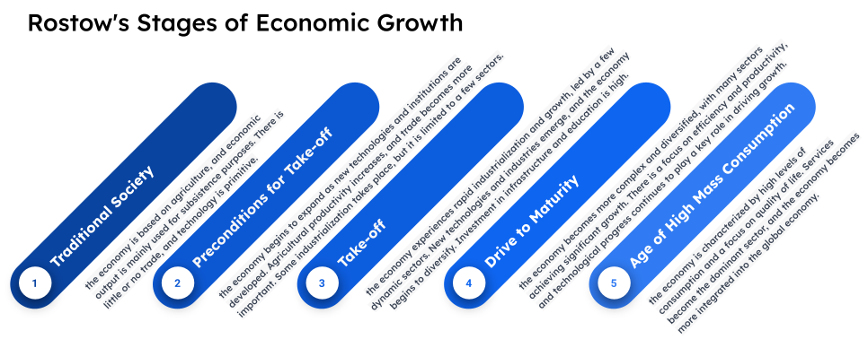

Doughnut Economics | Seven Ways to Think Like a 21st-Century Economist

Summary of Doughnut Economics, by by Kate Raworth
Published on June 09, 2024 by Erik Pillon
article post review
8 min READ
Doughnut Economics, by Kate Raworth, is probably the most interesting and clear book that I’ve come across in economic sciences. The author, often considered to be the “Keynes of the XXI century”, challenges the current traditional economic thinking and shows how a model focused solely on growth led to inequalities, market inefficiencies, environmental degradation, and social exclusion.
Highly influenced by seminal works like “Thinking in Systems”, by Donella Meadows, Kate Raworth not only provides a way to visualize the concepts and the ideas she’s describing, thus putting forward the idea of the “doughnut”, but also leads the way to a general rethinking the problems and the models themselves. The doughnut in particular is a new way to reconsider economics in general, where both economic and ecological factors are taken into account. The doughnut model consists of two concentric rings: the inner ring represents the social foundation that all humans need to thrive, including access to food, water, healthcare, and education. The outer ring represents the ecological ceiling beyond which we cannot safely go, including climate change, biodiversity loss, and pollution. The space between the two rings represents the “safe and just space for humanity” - a space where we can meet the needs of all people without overshooting the planet’s ecological limits. How to achieve this goal, is the main question of the book: prioritizing human well-being and environmental sustainability becomes central while models focusing on growth alone must be finally retired. Several examples of actions and initiative are present in the book and many concrete strategies to put in place these ideas are listed. Overall this book can be considered a “call to action” or even the manifesto of XXI century economics, for a new, more sustainable, and equitable economic system that prioritizes the well-being of people and the planet.
authors: Erik Pillon, the52ndbook@gmail.com
One Sentence Summary
Doughnut Economics presents a new economic model that takes into account both planetary boundaries and social foundations to create a sustainable and just future.
Best quote from the book
“The challenge we now face is to create economies that are regenerative and distributive by design, and are capable of providing us with health and prosperity for all, within the means of the living planet, for generations to come.”
Extended Summary and Personal Opinion
Chapter 1: Setting the stage
Raworth begins by describing the concept of economics as a system of rules and assumptions that govern our lives and explains why traditional economics is no longer fit for purpose. An important part of this chapter is devoted to the importance of pictures in our society and for human understanding. The author is then able to justify her effort to visualize as much as possible every concept in the book, hence the visual title of the “doughnut”.
Chapter 2: See the big picture
Elaborating on the seminal work of Donella Meadow, this chapter explains how the economy is not a standalone entity completely decoupled from society and environment, but is one of the several factors that act in synergy in a much more complicated system. Model that ignores the complexity of this system, are doomed to increase some metrics (like GDP) at the expense of other factors (like social justice and environment). Acknowledging that resources are limited and that we need to offer the next generations the same opportunities that we had, we are forced to develop and pursue an economical system where human beings and the environment live in harmony. The “manifesto” of the project is then depicted. Starting from what was later called the “neoliberal agenda”, the author put forward a new adapted, and improved set of principles: these include societal and environmental needs, a redefinition of the role of the state and the financial sectors, a new equilibrium between trade, power and business. In particular, the concept of the “triumph of the commons” (as opposed to the tragedy of the commons) is introduced as a new leading principle. Following the famous work of Mariana Mazzucato, a new vision of state-driven development and innovation is also discussed.
Chapter 3: Nurture the Human Nature
To accomplish a full revolution, we must focus on what the economy is really about, i.e., people. People and their values must be therefore the first thing to change. In an economy where people must compromise between profits and ideals, the corruption of principles and moral values can’t be avoided. Even the best-intentioned person who wants to contribute to society in a financially sustainable way constantly feels like the current system erodes good principles with financial motivation.
Chapter 4: Get Savvy with Systems
A holistic attempt of view of the economic system is attempted. The famous paper of science and complexity is introduced and a lot of mathematical concepts ranging from equilibrium theory to dynamical chaos are viewed from a sociological perspective. The author argues that the current capitalistic system suffers the major flaw of the “winner takes all” syndrome. Like in a monopoly game, everyone who starts with a small advantage will keep and increase this advantage until a major event reshuffles the ground again, thus affecting the capabilities and interest in creating innovation and improving social standards. A more ethical perspective is therefore necessary for leveraging the field and introducing modern and sustainable success measures.
Chapter 5: Design to distribute
In this chapter one of the most difficult topics is introduced: the redistribution of wealth. In particular, the Kuznets curve is introduced, i.e., the economical equivalent of “no pain no gain”.

The author shows how the Kuznets curve misled economists and policymakers away from moral values: accepting that social sacrifices are necessary to achieve a greater later common good, induced economists to shift away their interest from social principles.
Chapter 6: Create to regenerate
Following from the previous chapter, the author shows how the widely and wrongly adopted Kuznets curve was adopted even during the implementation of environmental policies, thus moving away from the center of the doughnut. This chapter explores how the doughnut model can be applied in practice, and offers examples of organizations and cities that have successfully adopted this new economic framework. This chapter explores the role of economics in driving social and environmental change and discusses the importance of taking a holistic and collaborative approach.
Chapter 7: Be agnostic about Growth
This chapter introduces the Rostow Stages of economic growth and the limits of an infinite growth model.

A system where wealth will keep increasing is essentially impossible by employing the limited resources that are given to us; the goal should focus therefore on an infinite growth model, where there’s no end, the S-curve model, where society can thrive while not being affected by stagnant economic values.

Books I will read afterward
“Doughnut Economics” is a relatively recent and influential book that has sparked much discussion and debate around the world. As such, there is a decent amount of literature that is relevant and that I wish to read afterward
- “The Limits to Growth” by Donella Meadows, Jorgen Randers, and Dennis Meadows (1972) — This influential book explores the implications of exponential growth in a finite world, and has inspired many subsequent works on sustainability and environmentalism.
- “Planetary Boundaries: Exploring the Safe Operating Space for Humanity” by Johan Rockstrom et al. (2009) — This paper introduced the concept of planetary boundaries, which provides a framework for understanding the environmental limits within which human societies must operate to maintain a safe and stable planet.
- “The Economics of Enough: How to Run the Economy as if the Future Matters” by Diane Coyle (2011) — This book argues that the current economic system is unsustainable, and proposes a new economic model that considers social and environmental concerns.
- “Ecological Economics: Principles and Applications” by Herman Daly and Joshua Farley (2004) — This book provides an introduction to ecological economics, which is a field that seeks to integrate ecological and economic thinking to create a more sustainable and just world.
- “Prosperity without Growth: Foundations for the Economy of Tomorrow” by Tim Jackson (2009) — This book argues that economic growth cannot continue indefinitely on a finite planet, and proposes a new economic model that emphasizes sustainability and social justice.
Personal Literature and Connections I made to the book
- Thinking in systems: a primer, by Donella Meadow
- Think Fast and Slow, Daniel Kahneman
- Science and complexity, by Warren Weaver
- Capital in the XXI century, by Thomas Piketty
- Dambisa Mojo: Economics growth has stallen